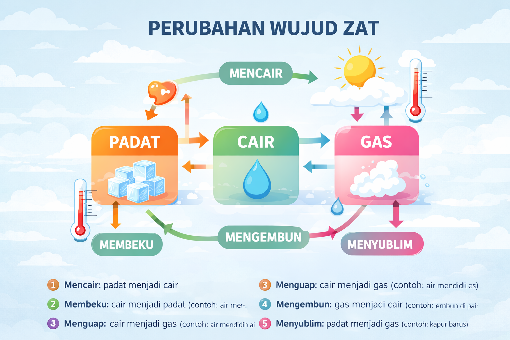
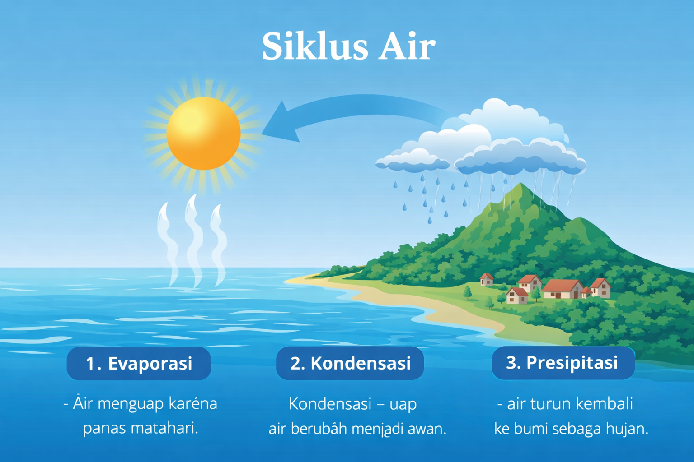
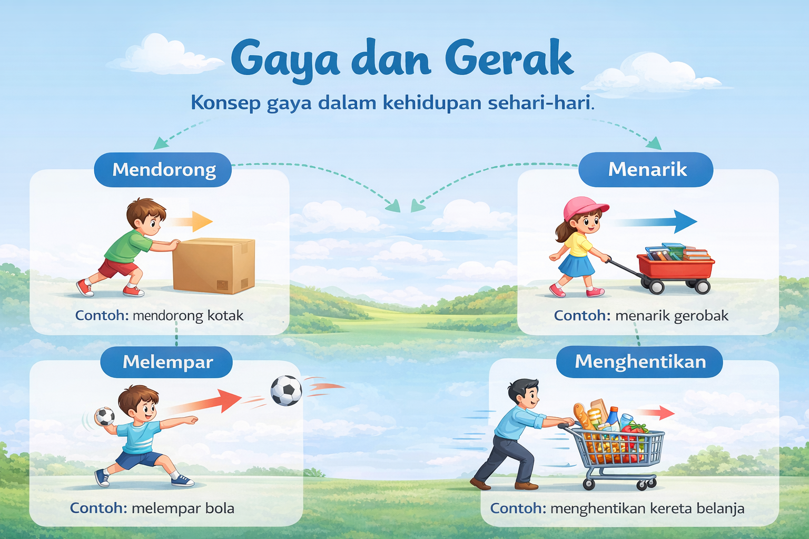

Perubahan Wujud Zat
Proses perubahan zat dari padat, cair, hingga gas.
Buka Materi

Siklus Air
Proses perputaran air di bumi melalui penguapan dan hujan.
Buka Materi

Gaya dan Gerak
Konsep gaya yang mempengaruhi gerak benda.
Buka Materi